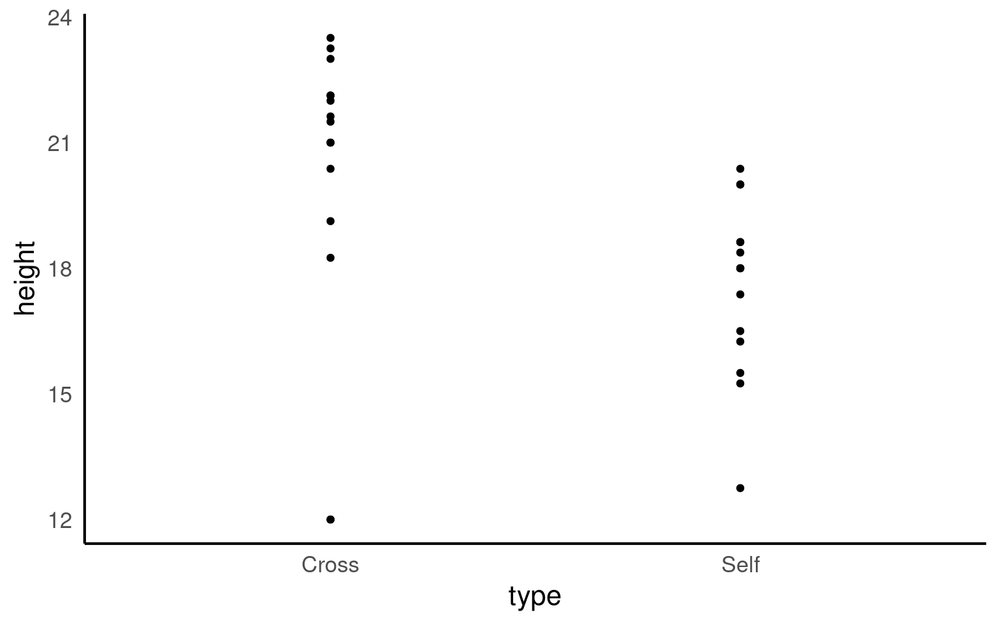
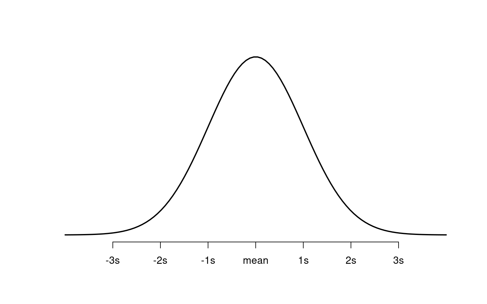
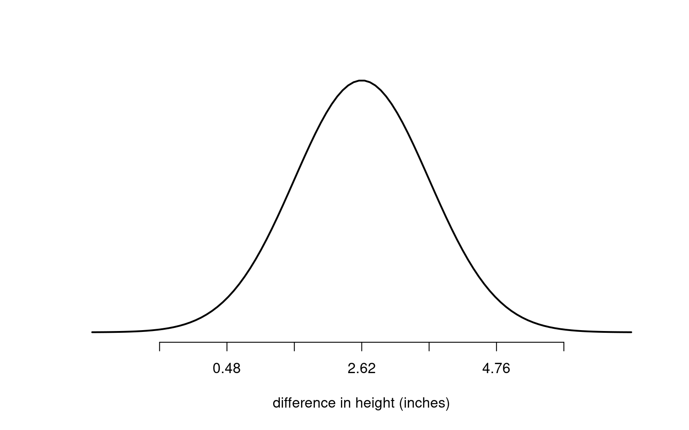

7 Inferential statistics
In this chapter will be focusing more on statistics. We actually did quite a lot of descriptive statistics work previously. Every time we summarised or described our data, by calculating a mean, median, standard deviation, frequency/count, or distribution we were carrying out descriptive statistics that helped us understand our data better.
We are building on this to develop our skills in inferential statistics. Inferential statistics allow us to make generalisations - taking a descriptive statistics from our data such as the sample mean, and using it to say something about a population parameter (i.e. the population mean).
For example we might measure the measure the heights of some plants that have been outcrossed and inbred and make some summaries and figures to construct an average difference in height (this is descriptive). Or we could use this to produce some estimates of the general effect of outcrossing vs inbreeding on plant heights (this is inferential).
7.1 Darwin’s maize data
Loss of genetic diversity is an important issue in the conservation of species. Declines in population size due to over exploitation, habitat fragmentation lead to loss of genetic diversity. Even populations restored to viable numbers through conservation efforts may suffer from continued loss of population fitness because of inbreeding depression.
Charles Darwin even wrote a book on the subject “The Effects of Cross and Self-Fertilisation in the Vegetable Kingdom”. In this he describes how he produced seeds of maize (Zea mays) that were fertilised with pollen from the same individual or from a different plant. The height of the seedlings that were produced from these were then measured as a proxy for their evolutionary fitness.
Darwin wanted to know whether inbreeding reduced the fitness of the selfed plants - this was his hypothesis. The data we are going to use today is from Darwin’s original dataset.
Set up a new project
Have you got separate subfolders set up within your project?
You should set up a script to put your work into - use this to write instructions and store comments.
Use the File > New Script menu item and select an R Script.
7.1.1 Visualisation
Now seems like a good time for our first data visualisation.

The graph clearly shows that the average height of the ‘crossed’ plants is greater than that of the ‘selfed’ plants. But we need to investigate further in order to determine whether the signal (any apparent differences in mean values) is greater than the level of noise (variance within the different groups).
The variance appears to be roughly similar between the two groups - though by making a graph we can now clearly see that in the crossed group, there is a potential outlier with a value of 12.
7.1.2 Comparing groups
As we have seen previously we can use various tidy functions to determine the mean and standard deviations of our groups.
| type | mean | sd |
|---|---|---|
| Cross | 20.19167 | 3.616945 |
| Self | 17.57500 | 2.051676 |
You should (re)familiarise yourself with how (and why) we calculate standard deviation.
7.2 Estimation
In the section above we concentrated on description. But the hypothesis Darwin aimed to test was whether ‘inbreeding reduced the fitness of the selfed plants’. To do this we will use the height of the plants as a proxy for fitness and explicitly address whether there is a difference in the mean heights of the plants between these two groups.
Our goal is to:
Estimate the mean heights of the plants in these two groups
Estimate the mean difference in heights between these two groups
Quantify our confidence in these differences
7.2.1 Standard error
Remember that standard deviation is a descriptive statistic — it measures how much individual data points vary around the mean. In other words, it tells us how spread out our data are within a sample.
However, when we move into inferential statistics, we’re no longer just describing our sample — we’re trying to make inferences about the population from which our sample came. This is where the standard error (SE) comes in.
We can think of the standard error as the standard deviation of the mean. The mean we calculate from our sample is just one possible estimate of the population mean. If we were to repeat our sampling process many times, we’d get slightly different sample means each time. The standard error tells us how much those sample means would typically vary from one sample to another.
In short, the standard error measures how confident we can be that our sample mean is close to the true population mean.
\[ SE = \frac{s}{\sqrt(n)} \] where
s = sample standard deviation
n = sample size
As sample size increases the standard error should reduce - reflecting an increasing confidence in our estimate.
| type | mean | sd | n | se |
|---|---|---|---|---|
| Cross | 20.19167 | 3.616945 | 15 | 0.9338912 |
| Self | 17.57500 | 2.051676 | 15 | 0.5297405 |
Here is a great explainer video on Standard Error
And try this Shiny App on Sampling
7.2.2 Standard error of the difference
Just as the standard error tells us how much a single sample mean would vary across repeated samples, the standard error of the difference tells us how much the difference between two sample means would vary if we repeated the experiment many times.
When comparing two groups (for example, two plant treatments), each sample mean has its own sampling variability. The variability in the difference between those means depends on both standard errors:
\[ SE_{diff} = \sqrt{SE^2_1 + SE^2_2} \]
This combined standard error forms the basis for inferential tests like the t-test, where we assess whether the observed difference between two means is likely due to random sampling variation — or reflects a real difference in the populatio
Our estimate of the mean is not really very useful without an accompanying measuring of uncertainty like the standard error, in fact estimates of averages or differences should always be accompanied by their measure of uncertainty.
7.2.3 Normal distribution
The normal distribution describes data that form a bell-shaped curve when plotted on a graph. Most values are close to the mean (average), and fewer occur as you move further away from it in either direction.
7.2.4 Spread of the data
The standard deviation measures how spread out the data are from the mean:
A small standard deviation → data are close to the mean → tall, narrow curve.
A large standard deviation → data are more spread out → wide, flat curve.
The bell-shaped curve appears often in nature — for example, in human height, penguin flipper length, or plant height.
As a probability distribution, the total area under the curve equals 1 (the whole population). Certain parts of the curve correspond to known probabilities:
About 68% of values are within 1 standard deviation of the mean.
About 95% are within 2 standard deviations.
About 99.7% are within 3 standard deviations.

7.2.4.1 The Central Limit Theorem
The central limit theorem tells us that if we take many random samples from a population, the averages (sample means) will form a normal distribution — even if the original data are not normal.
The standard error (SE) shows how much the sample mean varies from the true population mean.

7.2.4.2 Example: Comparing Plant Heights
Suppose we measure the difference in height between two groups of maize plants — cross-pollinated and self-pollinated. We find a mean difference of 2.62 inches, with a standard error of 1.07 inches.
If the true difference between the groups were actually zero, how likely would it be to observe a difference of 2.62 inches?
Because 2.62 is more than two standard errors from zero, it would be unusual to see this by chance alone. That’s why we might reject the null hypothesis (that there’s no difference). In statistical terms, this corresponds to a p-value < 0.05.
If we used a stricter test (for example, p < 0.001), the result would not be considered significant, since zero would still fall within three standard errors.
7.2.5 Confidence Intervals
A confidence interval (CI) gives a range that is likely to include the true mean difference.
Since ±2 standard errors cover about 95% of the normal curve, the 95% confidence interval for our estimate is:
So, we write this as:
The maize plants that have been cross pollinated were taller on average than the self-pollinated plants, with a mean difference in height of 2.62 [0.18, 5.06] inches (mean [95% CI]).
This statement clearly shows the direction, size, and uncertainty of the difference.
It’s a common mistake to say we are 95% sure the true mean lies inside this interval. Technically, it means that if we repeated this experiment many times, 95% of those intervals would contain the true mean.